登录用户名 jiapubianji 密码 jiapubianji
欢迎补充信息资料
如果上方链接打开失败，请点击刷新后重试
苗莊鄭氏，原居山東省泰安郊區房村 鄉埠裏八村。明朝萬歷年間，因兵荒馬亂 遷至苗莊。始祖名曉字東升，世代勤勞 忠厚，艱苦創業，遂發展成為鄭氏家族， 生息繁衍而又分別定居至樓德和西營。 星轉鬥移，經過四百余年的風風雨雨， 人世變遷，鄭氏家族有了很大發展，思先人 之恩，遂想立一家譜供後世瞻仰，便根據 以前先人的軸堂和前輩老人的傳說記載， 經考證落實，遂製成本譜。望鄭氏子孫 勿忘先人之德，使鄭氏家族發揚廣大， 流芳萬世。 行輩 ：興賢緒耐兆 傳善家方長① 支代表：鄭金山 族代表：鄭澄保，鄭澄舜，鄭澄津，鄭希強 主辦人：鄭衍昆，鄭衍超 書寫人：鄭衍瑞 公園一九九五年古歷十一月 敬書
苗庄郑氏，原居山东省泰安郊区房村 乡埠里八村。明朝万历年间，因兵荒马乱 迁至苗庄。始祖名晓字东升，世代勤劳 忠厚，艰苦创业，遂发展成为郑氏家族， 生息繁衍而又分别定居至楼德和西营。 星转斗移，经过四百余年的风风雨雨， 人世变迁，郑氏家族有了很大发展，思先人 之恩，遂想立一族谱供后世瞻仰，便根据 以前先人的轴堂和前辈老人的传说记载， 经考证落实，遂制成本谱。望郑氏子孙 勿忘先人之德，使郑氏家族发扬广大， 流芳万世。 行辈 ：兴贤绪耐兆 传善家方长① 支代表：郑金山 族代表：郑澄保，郑澄舜，郑澄津，郑希强 主办人：郑衍昆，郑衍超 书写人：郑衍瑞 公园一九九五年古历十一月 敬书
